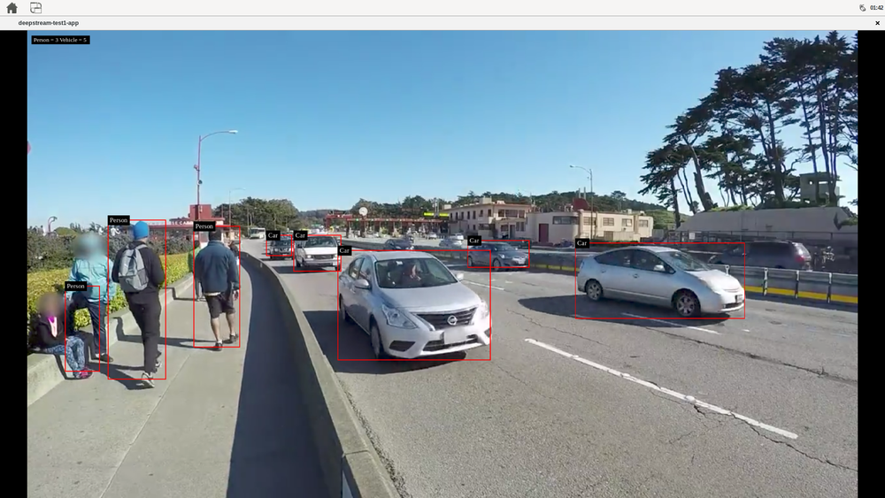

Deep Stream Inference
Posted on Sun 04 August 2024 in Journal
| Abstract | Deep Stream Inference |
|---|---|
| Authors | Walter Fan |
| Category | learning note |
| Status | v1.0 |
| Updated | 2024-08-04 |
| License | CC-BY-NC-ND 4.0 |
Let's take a look for the example -- it uses DeepStream elements for a single H.264 stream: filesrc → decode → nvstreammux → nvinfer (primary detector) → nvdsosd → renderer.
This app uses resnet10.caffemodel for detection.
ds_example_1:
desc: deep stream example 1
tags: jetson
steps:
# 读取 H264 编码的视频文件
- filesrc location=/opt/nvidia/deepstream/deepstream/samples/streams/sample_720p.h264
- h264parse # 解析 h264 文件流为 video/x-h264 字节流
- nvv4l2decoder # 将 video/x-h264 字节流为 NV12 格式
- nvstreammux0.sink_0 nvstreammux batch-size=1 width=1920 height=1080 batched-push-timeout=40000
- nvinfer config-file-path=/opt/nvidia/deepstream/deepstream/sources/apps/sample_apps/deepstream-test1/dstest1_pgie_config.txt
- nvvideoconvert # 转换视频格式
- nvdsosd # 画框
- autovideosink # 显示视频
The core element is nvinfer that using TensorRT for inference
效果如下

Gst-nvinfer
The Gst-nvinfer plugin does inferencing on input data using NVIDIA® TensorRT™.
The plugin accepts batched NV12/RGBA buffers from upstream. The NvDsBatchMeta structure must already be attached to the Gst Buffers.
The low-level library (libnvds_infer) operates on any of INT8 RGB, BGR, or GRAY data with dimension of Network Height and Network Width.
The Gst-nvinfer plugin performs transforms (format conversion and scaling), on the input frame based on network requirements, and passes the transformed data to the low-level library. The low-level library preprocesses the transformed frames (performs normalization and mean subtraction) and produces final float RGB/BGR/GRAY planar data which is passed to the TensorRT engine for inferencing. The output type generated by the low-level library depends on the network type. The pre-processing function is:
y = net scale factor*(x-mean)
Where:
-
x is the input pixel value. It is an int8 with range [0,255].
-
mean is the corresponding mean value, read either from the mean file or as offsets[c], where c is the channel to which the input pixel belongs, and offsets is the array specified in the configuration file. It is a float.
-
net-scale-factor is the pixel scaling factor specified in the configuration file. It is a float.
-
y is the corresponding output pixel value. It is a float.
Gst-nvinfer currently works on the following type of networks:
-
Multi-class object detection 多类别对象检测
-
Multi-label classification 多标签分类
-
Segmentation (semantic) 语义分割
-
Instance Segmentation 实例分割
The Gst-nvinfer plugin can work in three modes:
-
Primary mode: Operates on full frames - 主要模式：对全帧进行操作
-
Secondary mode: Operates on objects added in the meta by upstream components - 次要模式：对上游组件在元中添加的对象进行操作
-
Preprocessed Tensor Input mode: Operates on tensors attached by upstream components - 预处理张量输入模式：对上游组件附加的张量进行操作
在预处理张量输入模式下运行时，Gst-nvinfer 内部的预处理被完全跳过。插件会查找附加到输入缓冲区的 GstNvDsPreProcessBatchMeta，并将张量按原样传递给 TensorRT 推理函数，而无需进行任何修改。此模式目前支持全帧和 ROI 处理。GstNvDsPreProcessBatchMeta 由 Gst-nvdspreprocess 插件附加。
当插件与跟踪器一起作为辅助分类器运行时，它会尝试通过避免在每一帧中对相同的对象进行重新推理来提高性能。它通过将分类输出缓存在以对象的唯一 ID 为键的映射中来实现这一点。仅当对象在帧中首次出现（基于其对象 ID）或对象的大小（边界框面积）增加 20% 或更多时，才会推断该对象。只有将跟踪器添加为上游元素时，才可以进行此优化。
notes
- TNR - Temporal Noise Reduction
- VPI - Vision Programming Interface
- PVA - Programmable Vision Accelerator
- VIC - Video and Image Compositor
- OFA - Optical Flow Accelerator
NV12
NV12是一种广泛使用的视频编解码颜色编码格式，它采用YUV 4:2:0的采样方式，意味着每四个Y分量共享一组UV分量。在NV12格式中，亮度信息（Y分量）和色度信息（UV分量）是分开存储的，其中Y分量占据一个平面，UV分量交替存储于另一个平面，具体的存储顺序是YYYYY...后跟着UVUV...，即U和V分量是交错存储的 。这种格式在视频传输和图像处理中非常常见，因为它在保持图像质量的同时，可以有效地减少数据量，降低存储和传输的带宽需求 。
NV12格式的一个优点是它在GPU中的处理效率很高，因为它只有两个平面，并且UV平面的宽度（pitch）和亮度平面相同，高度是亮度平面的一半，这使得在很多场景下可以高效地一起处理，而不需要分为两个或三个平面分别操作 。此外，NV12格式也是iOS相机（AVCaptureOutput）可直接输出的视频帧格式之一，它在iOS上分为Full Range和Video Range两种，区别在于亮度（Y）分量的取值范围 。
在实际应用中，NV12格式的图像数据可以通过特定的函数进行高效的拷贝，例如Windows SDK提供的MFCopyImage函数，它可以提高拷贝效率，尤其是在视频解码或实时直播场景中 。此外，NV12格式的图像数据还可以转换为其他格式，如RGB，这在图像后期处理和显示中非常有用 。
总的来说，NV12是一种高效的YUV颜色编码格式，适用于多种图像和视频处理应用，它通过减少色度分量的采样率，在保证图像质量的同时降低了数据量，提高了处理效率
Gst-nvstreammux
The Gst-nvstreammux plugin forms a batch of frames from multiple input sources.
When connecting a source to nvstreammux (the muxer), a new pad must be requested from the muxer using gst_element_get_request_pad() and the pad template sink_%u.
For more information, see link_element_to_streammux_sink_pad() in the DeepStream app source code.
The muxer forms a batched buffer of batch-size frames. (batch-size is specified using the gst object property.)
If the muxer’s output format and input format are the same, the muxer forwards the frames from that source as a part of the muxer’s output batched buffer.
The frames are returned to the source when muxer gets back its output buffer.
If the resolution is not the same, the muxer scales frames from the input into the batched buffer and then returns the input buffers to the upstream component.
The muxer pushes the batch downstream when the batch is filled, or the batch formation timeout batched-pushed-timeout is reached.
The timeout starts running when the first buffer for a new batch is collected.
The muxer uses a round-robin algorithm to collect frames from the sources.
It tries to collect an average of (batch-size/num-source) frames per batch from each source (if all sources are live and their frame rates are all the same).
The number varies for each source, though, depending on the sources’ frame rates.
The muxer outputs a single resolution (i.e. all frames in the batch have the same resolution).
This resolution can be specified using the width and height properties.
The muxer scales all input frames to this resolution.
The enable-padding property can be set to true to preserve the input aspect ratio while scaling by padding with black bands.
For DGPU platforms, the GPU to use for scaling and memory allocations can be specified with the gpu-id property.
For each source that needs scaling to the muxer’s output resolution, the muxer creates a buffer pool and allocates four buffers each of size:
output width*output height*f
Where f is 1.5 for NV12 format, or 4.0 for RGBA.
The memory type is determined by the nvbuf-memory-type property. Set the live-source property to true to inform the muxer that the sources are live.
In this case the muxer attaches the PTS of the last copied input buffer to the batched Gst Buffer’s PTS.
If the property is set to false, the muxer calculates timestamps based on the frame rate of the source which first negotiates capabilities with the muxer.
The muxer attaches an NvDsBatchMeta metadata structure to the output batched buffer. This meta contains information about the frames copied into the batch (e.g. source ID of the frame, original resolutions of the input frames, original buffer PTS of the input frames).
The source connected to the Sink_N pad will have pad_index N in NvDsBatchMeta.
The muxer supports addition and deletion of sources at run time.
When the muxer receives a buffer from a new source, it sends a GST_NVEVENT_PAD_ADDED event.
When a muxer sink pad is removed, the muxer sends a GST_NVEVENT_PAD_DELETED event. Both events contain the source ID of the source being added or removed (see sources/includes/gst-nvevent.h).
Downstream elements can reconfigure when they receive these events. Additionally, the muxer also sends a GST_NVEVENT_STREAM_EOS to indicate EOS from the source. The muxer supports calculation of NTP timestamps for source frames. It supports two modes. In the system timestamp mode, the muxer attaches the current system time as NTP timestamp. In the RTCP timestamp mode, the muxer uses RTCP Sender Report to calculate NTP timestamp of the frame when the frame was generated at source. The NTP timestamp is set in ntp_timestamp field of NvDsFrameMeta. The mode can be toggled by setting the attach-sys-ts property. For more details, refer to section NTP Timestamp in DeepStream.
Reference
- DeepStream 6 Developer Guide
- Gst-nvvideo4linux2 plugin
- Gst-nvstreammux plugin
- Gst-nvinfer plugin
- TensorRT developer guide
本作品采用知识共享署名-非商业性使用-禁止演绎 4.0 国际许可协议进行许可。